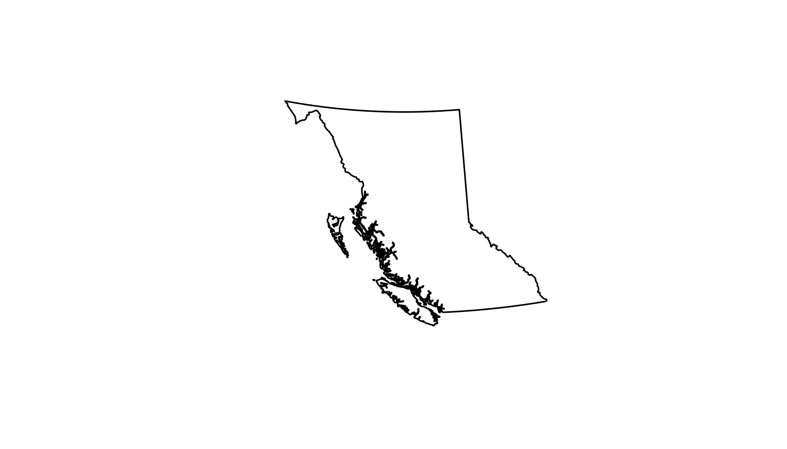
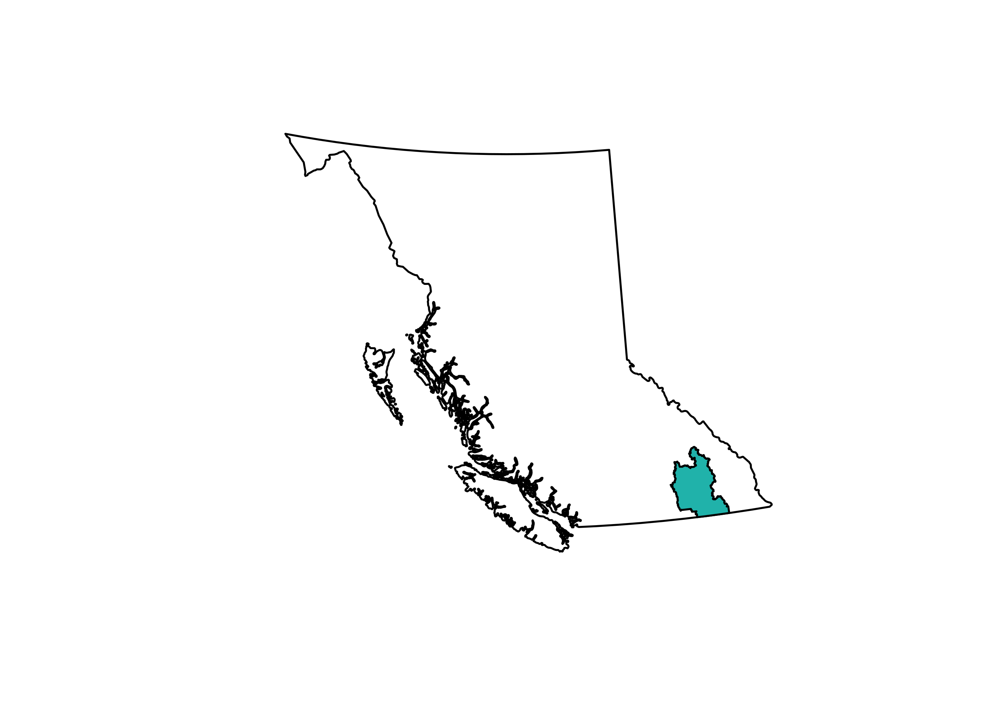
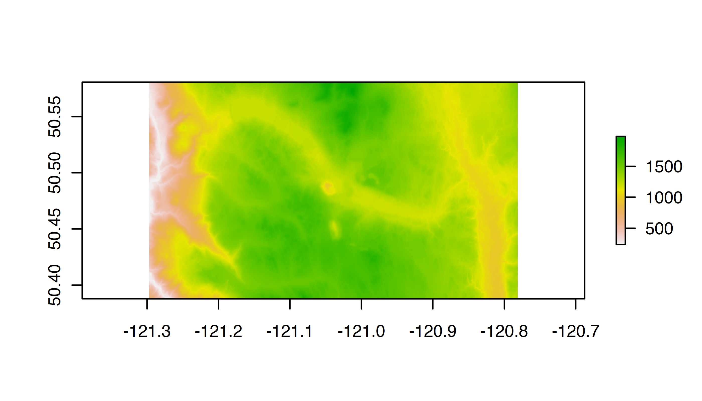
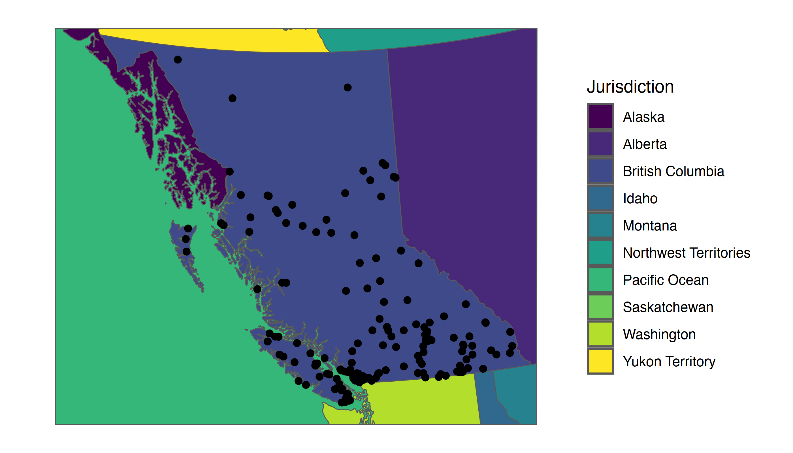
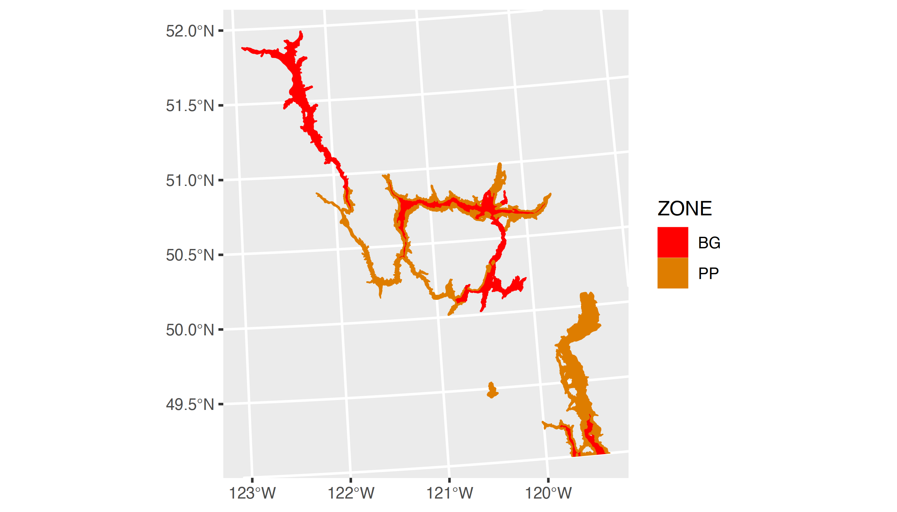

Overview
bcmaps is an R
package of spatial map layers for British Columbia.
bcmaps provides access to various spatial layers of
British Columbia, such as administrative boundaries, natural resource
management boundaries, watercourses, census boundaries, etc. All layers
are available as sf objects in the BC
Albers projection, which is the B.C. Government standard.
Most layers are accessed directly from the B.C. Data Catalogue using the bcdata R package under the hood. See each layer’s individual help file for more detail.
IMPORTANT NOTE Support for Spatial objects (
sp) was removed in {bcmaps} v1.3.0. Please usesfobjects with {bcmaps}. A discussion on the evolution of the spatial software stack in R can be found here: https://r-spatial.org/r/2022/04/12/evolution.html.
Usage
To see the layers that are available, run the
available_layers() function:
Most layers are accessible by a shortcut function by the same name as
the object. Then you can use the data as you would any sf
object. The first time you try to access a layer, you will be prompted
for permission to download that layer to your hard drive. Subsequently
that layer is available locally for easy future access. For example:
library(sf)
bc <- bc_bound()
plot(st_geometry(bc))
There are two British Columbia boundary map layers available in
bcmaps:
-
bc_bound()for fast plotting with suitable detail for most figures (source: (7.5M) Provinces and States - The Atlas of Canada Base Maps for BC) -
bc_bound_hres()for geospatial analyses requiring detailed lineworks of British Columbia (source: Province of British Columbia - Boundary Terrestrial)
Simple Features objects
By default, all layers are returned as sf spatial
objects:
library(bcmaps)
library(sf)
# Load and plot the boundaries of B.C.
bc <- bc_bound()
plot(st_geometry(bc))
## Next load the Regional Districts data, then extract and plot the Kootenays
rd <- regional_districts()
kootenays <- rd[rd$ADMIN_AREA_NAME == "Regional District of Central Kootenay", ]
plot(st_geometry(kootenays), col = "lightseagreen", add = TRUE)
Digital Elevation Model for British Columbia 1:250,000
The cded_raster and cded_stars functions
return the 1:250,000 digital elevation model for British Columbia
bounded by some area of interest. Here we are retrieving the area
bounded by the Logan Lake census subdivision:
library(raster)
aoi <- census_subdivision()[census_subdivision()$CENSUS_SUBDIVISION_NAME == "Logan Lake", ]
aoi_raster <- cded_raster(aoi)
plot(aoi_raster)
It’s a beautiful day in the neighbourhood
A handy layer for creating maps for display is the
bc_neighbours layer, accessible with the function by the
same name. This example also illustrates using the popular ggplot2 package to plot maps
in R using geom_sf and the bc_cities()
function available in bcmaps:
library(ggplot2)
ggplot() +
geom_sf(data = bc_neighbours(), mapping = aes(fill = name)) +
geom_sf(data = bc_cities()) +
coord_sf(datum = NA) +
scale_fill_viridis_d(name = "Jurisdiction") +
theme_minimal()
Biogeoclimatic Zones
As of version 0.15.0 the B.C. BEC (Biogeoclimatic Ecosystem
Classification) map is available via the bec() function,
and an accompanying function bec_colours() function to
colour it:
bec <- bec()
library(ggplot2)
bec_sub <- bec[bec$ZONE %in% c("BG", "PP"),]
ggplot() +
geom_sf(data = bec_sub,
aes(fill = ZONE, col = ZONE)) +
scale_fill_manual(values = bec_colors()) +
scale_colour_manual(values = bec_colours())
Updating layers
When you first call a layer function bcmaps will remind
you when that layer was last updated in your cache with a message. For a
number of reasons, it might be necessary to get a fresh layer in your
bcmaps cache. The easiest way to update is to use the
force argument:
ep <- ecoprovinces(force = TRUE)Another option is to actively manage your cache by deleting the old layer and calling the function again:
show_cached_files()
delete_cache('ecoprovinces')
ep <- ecoprovinces()Utility Functions
The package also contains a few handy utility functions:
-
transform_bc_albers()for transforming anysfobject to BC Albers projection -
bc_area()to get the total area of British Columbia in various units -
bc_bbox()to get an extend/bounding box for British Columbia